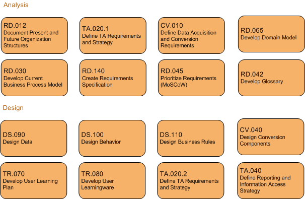

OUM |
Service-Oriented Architecture (SOA) Governance Implementation Supplemental Guide |
||
Method Navigation |
Current Page Navigation |
||
|
|
||||||||
The SOA Governance Implementation Supplemental Guidelines provides detail information on processes and tasks that an organization can follow to implement the SOA Governance Model. When you develop SOA Governance in your organization, depending on your organization’s approach and a level of SOA maturity, you may follow a strategic approach or a pragmatic approach.
In a strategic approach, you first perform SOA Governance planning, such as an enterprise-wide analysis of Governance Structures and Practices, develop a Governance Vision and create a Governance Roadmap. After that, you perform SOA Governance Implementation in which you design and develop structures of your enterprise’s and projects’ assets and asset lifecycle management, and implement a SOA Governance tooling support, such as, an Enterprise Repository and a Service Registry. You may find details on SOA Governance Planning in the SOA Governance Planning view and the SOA Governance Planning Supplemental Guide.
In a pragmatic approach, your organization already has a certain level of SOA Governance implemented. For example, the organization uses Excel spreadsheets or a wiki to maintain assets (e.g., services, applications) and a lifecycle process around these assets implemented manually or with email support. Further, the organization might only apply the governance in a small number of projects while there are many projects that do not have any level of governance at all. In this approach, you can follow the tasks of the SOA Governance Implementation guide. You may also take into account tasks from the SOA Governance Planning view and determine which tasks you need to execute in order to fill gaps in your enterprise-wide SOA Governance Model.
The goal of SOA Governance Implementation is to move from the current state of governance to a state where all SOA projects properly follow and fully adopt the SOA Governance Model. The future state can be characterized as follows:
1. There is central asset management in place, that is, an Enterprise Repository is implemented and up and running,
2. All existing assets from legacy repositories, applications and environments are in the repository and they have been validated against the running environment.
3. There is a service lifecycle defined and incorporated in software and application development processes that produce or consume assets.
4. All staff members of the organization are educated on SOA Governance, that is – they are aware of the service lifecycle and apply it in their daily job.
This supplemental guide describes the methodology that you can follow to create a SOA Governance specification and develop SOA Governance tooling support for an organization that already has several SOA projects running or implemented. Moreover, the organization already may have a certain level of SOA Governance in place, however, it is not well documented, structured and implemented. Typically, this type of organization started to develop application integration in SOA style – that is, the organization uses Enterprise Service Bus to integrate applications, however, there is a lack of standards, guidelines and structures to govern SOA projects. Moreover, the organization still spends too much effort on maintaining ad hoc application integration that typically happens in a point-to-point style while the organization’s goal is to gradually move from the point-to-point integration style to SOA. For purposes of reporting and a general overview of services and applications in the organization’s environment, there is a repository, usually an Excel spreadsheet and a manual process that the organization executes to gather information and maintain the repository.
The organization decides to implement SOA Governance to support existing and future SOA projects. For this purpose, the organization will use an Enterprise Repository that provides tooling support for SOA Governance. The Enterprise Repository should also provide a certain level of flexibility to accommodate the organization’s specific needs, such as, customizations of asset types and customizations of a service lifecycle. This supplemental guide describes a development process to migrate from a legacy service repository to a fully-fledged Enterprise Repository and a service lifecycle that the organization should follow when developing any new services for application integration. The following figure shows an overview of the OUM tasks that are included in this supplemental guide with additional guidance for this development process.

When you have performed SOA Governance Planning prior to a SOA Governance Implementation, the following table shows how you the work products from SOA Governance Planning can be used as prerequisites or touch points to a SOA Governance Implementation:
| Envision Governance Task | Touch Point to SOA Governance Implementation Task | Usage (if GV Work Product is Available) |
|---|---|---|
Determine Organizational Impact of Governance (GV.040) |
Document Present and Future Organization Structures (RD.012) | Review the organizational changes that have been decided upon. |
GV.060 Define Policy Implementation Tooling (GV.060) |
Create System Context Diagram (RD.005) | Review whether there are any policy implementation tooling decisions that impact the system context. |
Determine Projects Meta Data Descriptions (GV.092) Determine Applications Meta Data Description (GV.094) Determine Services Meta Data Description (GV.096) Determine Other Meta Data Descriptions (GV.098) |
Define Data Acquisition and Conversion Requirements (CV.010) Develop Domain Model (RD.065) |
Review the Meta Data Descriptions to understand the asset properties, relationships and life cycles. |
Review Customer Software Development Process (EA.095) Define Policy Implementation Processes (GV.050.1) |
Develop Current Business Process Model (RD.030) | Review the documented "Customer Software Development Process", and what policy implementation processes have been defined. |
Discover or Define Policies (GV.030) |
Design Business Rules (DS.110) | Use the Governance Policy Catalog as an input to identify / design required business rules. |
This Glossary contains important terms that are used in the SOA Governance Implementation Supplemental Guide. You can also use these terms as a starting point for creating your own SOA Governance Project Glossary as defined by task, Develop Glossary (RD.042) in the SOA Governance Implementation Supplemental Task Guidelines.
| Term | Definition |
|---|---|
Advanced Submitter |
A user that defines the responsibility of a user who has editable rights for assets in an Enterprise Repository. |
Asset |
Anything that is of value to SOA Governance, such as, service, application, environment, framework, pattern, etc. |
Asset Type |
Meta data structures for a certain type of an asset. |
Built-In Process |
A process that supports operation of an Enterprise Repository. |
Conversion |
A process that transforms structures of assets from a legacy repository to new structures defined by an Enterprise Repository. |
Enterprise Service Bus |
A middleware that facilitates integration process running across two or more back-end applications. |
ESB |
See Enterprise Service Bus. |
Harvesting |
A process that fetches information about assets (e.g., services, process, components, etc.) from a running middleware platform to an Enterprise Repository. |
Migration |
A process that migrates assets from a legacy repository to an Enterprise Repository. It usually includes automated conversion and manual resolution of conflicts, errors or warnings. |
Offline Service Repository |
A service repository with a very limited functionality. It is usually implemented in files or spreadsheets with Governance processes implemented manually. |
OOTB |
See Out of the Box. |
Out of the Box |
A functionality of a software product that comes with the product. |
Registrar |
A user role that defines responsibility for an Enterprise Repository power user. |
Service Lifecycle Process |
A process that defines a development of services. Its states typically are: propose, plan, build, test, deploy, and retire. |
Service Repository |
See Enterprise Repository. |
Service Registry |
A software that stores information about services and their classifications and allows for searching services. It usually implements UDDI interface. |
Viewer |
A user role that defines read-only rights for an Enterprise Repository user. |
UDDI |
Universal Description, Discovery and Integration; An interface for a service registry standardized by OASIS. |

Copyright © 2006, 2016, Oracle and/or its affiliates. All rights reserved.